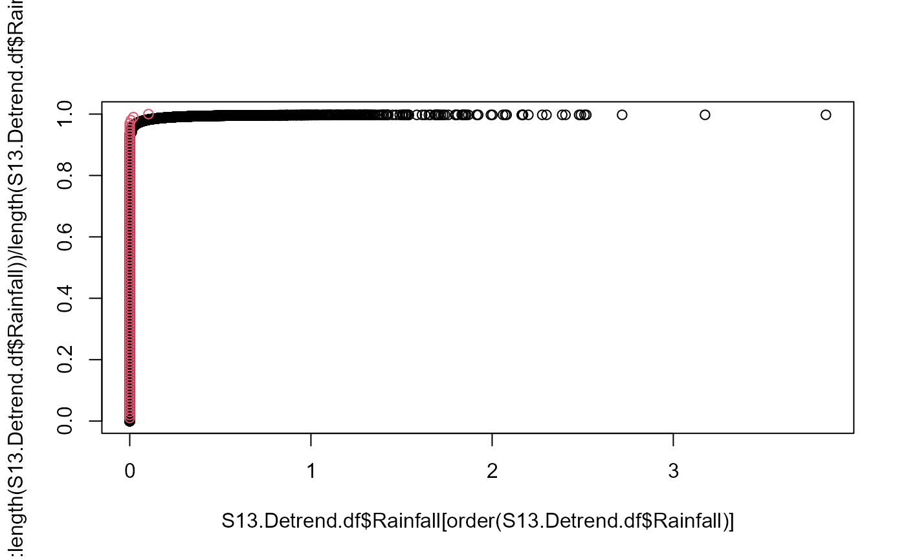

inverse_pit_gpd.RdTransforms a uniform (0,1) sample to the original scale by invoking the inverse Probability Integral Transform (PIT). Realizations above a high threshold are transformed through a user-specified Generalized Pareto Distribution (GPD) while those below are transformed through the empirical distribution.
inverse_pit_gpd(u, Data, Data_Declust, q)A vector of u transformed to the specified GPD.
#First decluster the rainfall series to find the 500 events
#with the highest peaks
S13.Rainfall.Declust = Decluster(Data=S13.Detrend.df$Rainfall,
SepCrit=24*3, u=0.99667)
#Generate some uniform (0,1) random variates
unif = runif(100,0,1)
#Transform the unifrom variate to the original scale
x.sim = inverse_pit_gpd(unif,S13.Detrend.df$Rainfall,S13.Rainfall.Declust$Declsutered,0.95)
#> Error in quantile.default(Data, q): missing values and NaN's not allowed if 'na.rm' is FALSE
#Plotting the empirical distribution functions of the sample and observations
plot(S13.Detrend.df$Rainfall[order(S13.Detrend.df$Rainfall)],
(1:length(S13.Detrend.df$Rainfall))/length(S13.Detrend.df$Rainfall))

points(x.sim[order(x.sim)],1:length(x.sim)/length(x.sim),col=2)
#> Error: object 'x.sim' not found